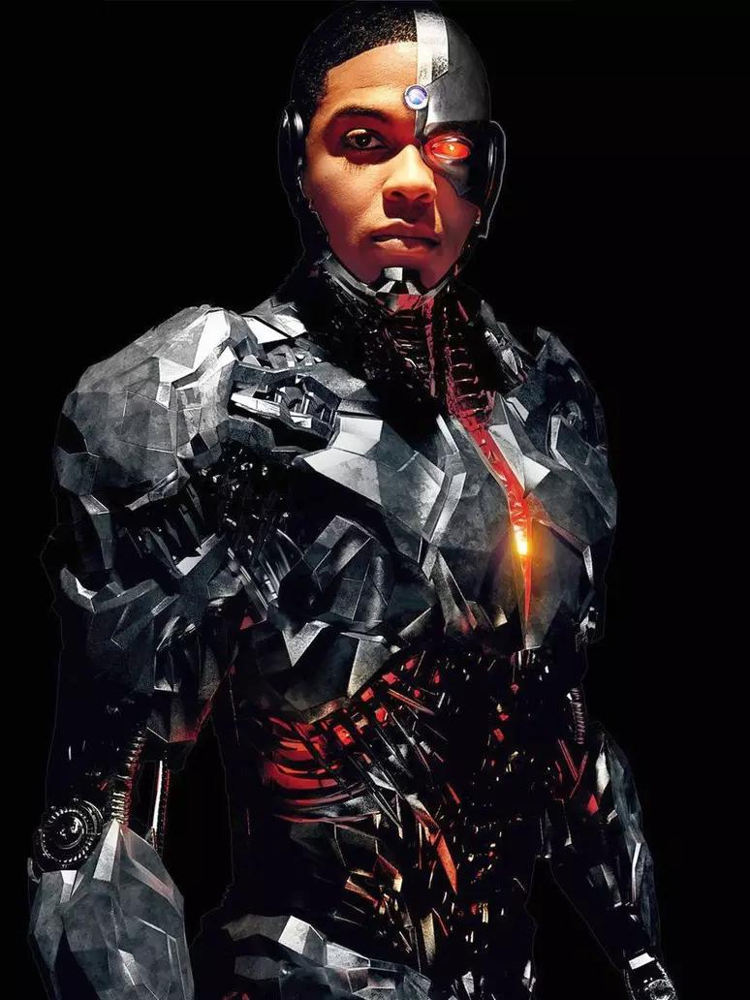

CIBORGUE / VICTOR STONE
Cyborg (Victor "Vic" Stone) é um super-herói das histórias em quadrinhos publicadas pela DC Comics. O personagem foi criado pelo escritor Marv Wolfman e pelo artista George Pérez, e fez a sua primeira aparição na DC Comics Presents #26 (outubro de 1980). Originalmente integrante dos Novos Titãs, Cyborg foi estabelecido como membro fundador da Liga da Justiça no reboot de 2011 das HQ's da DC Comics. Victor Stone era um jovem atleta, um jogador de futebol americano do time do colegial, além de também ser bastante inteligente, com um Q.I. de 170 pontos. Seu pai é Silas Stone, um dos principais cientistas dos Laboratórios S.T.A.R., lugar que estuda e desenvolve tecnologias avançadas, sejam elas terráqueas ou alienígenas. Certo dia, Victor faz uma visita o Laboratório para confrontar seu pai por ter faltado a mais um de seus jogos. Os dois discutem e então um acidente acontece. A caixa-materna, um artefato alienígena descoberto por Superman e atual objeto de pesquisa do laboratório, explode, destruindo grande parte do corpo de Victor. Silas imediatamente socorre o filho e, para poder salvar sua vida, utiliza de uma tecnologia experimental para transformar Victor em um ciborgue. Durante o processo, nanites foram injetados, membros robóticos e um sistema operacional foram instalados, e a energia da caixa-materna foi integrada ao novo corpo de Victor. Assim surge o Cyborg.